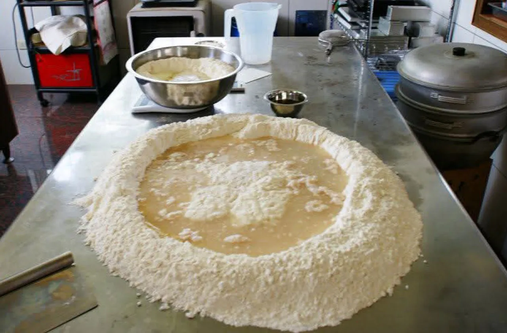
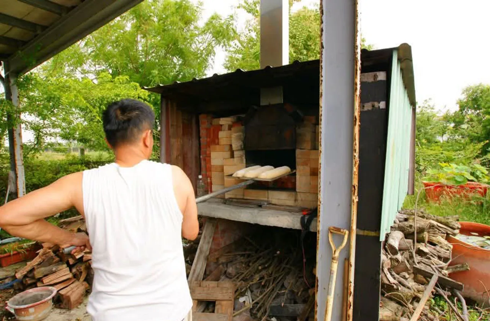
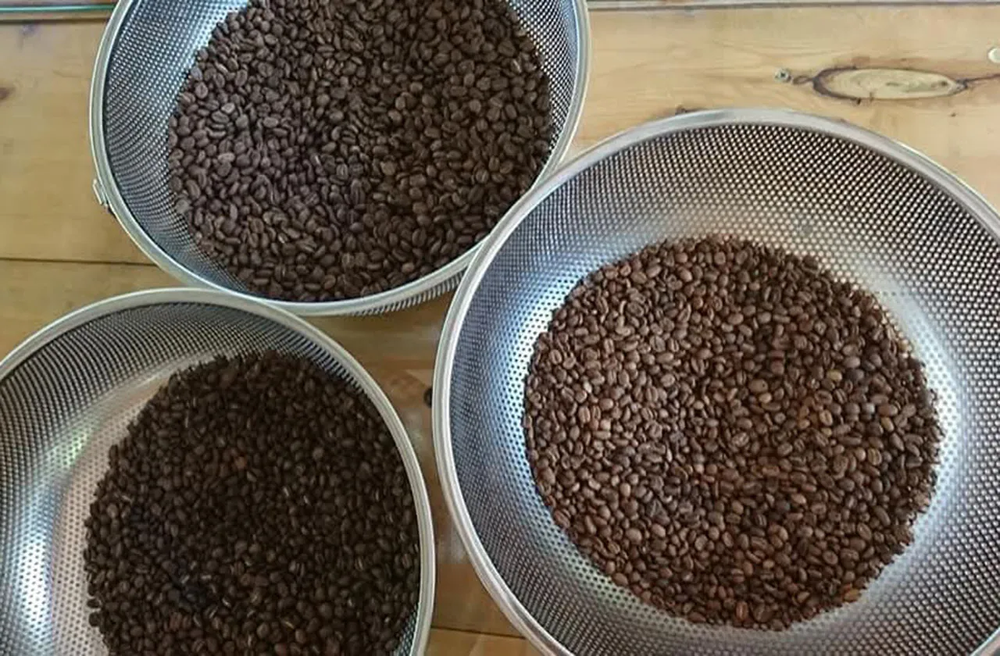
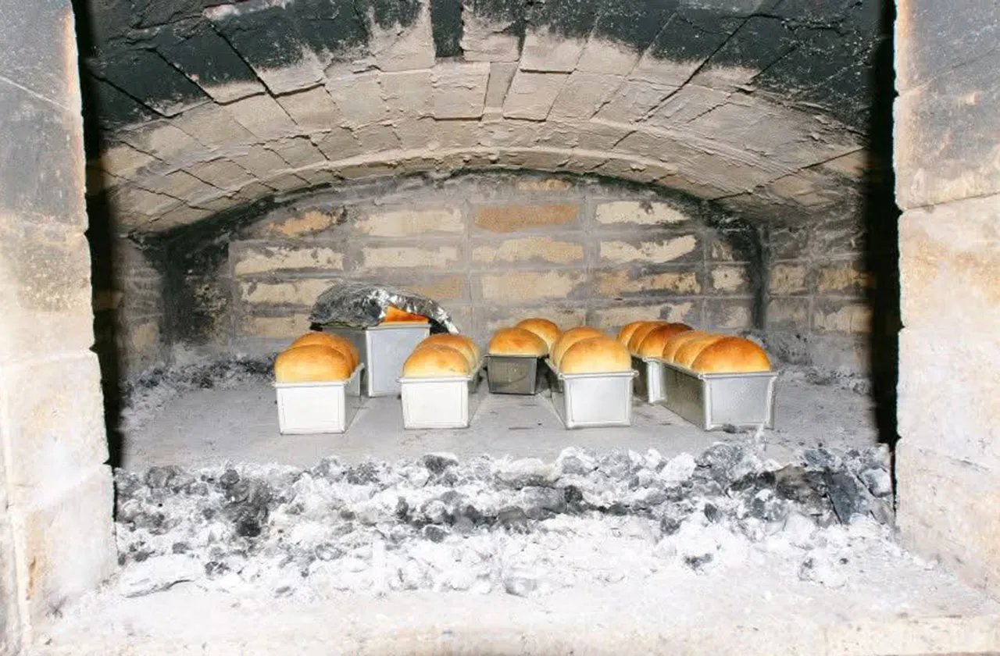

play_circle_outline 初衷很簡單，只是想吃得安心
「九一窯烤」的誕生，不來自商業企劃，也不是刻意創業的決定。初衷只是為了讓自己和家人吃得安心，因此我們選擇少鹽、少糖、少油、不過度調味，回歸麵粉、水、鹽與酵母的本質。為了窯烤麵包特地手作了一座窯，沒有華麗外觀，卻有著實在的味道。親朋好友吃了之後驚艷於這樣的簡單竟然可以這麼好吃，也開始向我們訂購。就在這樣一個個溫暖的推動中，「九一窯烤」不再只是家用烘焙，開始將美味分享給周遭客戶。

whatshot 柴火窯烤，是我們的堅持
機器可以生產效率，但我們選擇慢工出細活的柴火窯烤。我們堅信：火不是工具，而是烘焙中的靈魂。我們每日手動升火、控溫，使用天然木柴，讓熱源慢慢滲入麵糰中心，產生酥脆外皮與濕潤內裡，也讓麵包多了一層獨特的木質焦香。這種老派的工法讓每顆麵包都有不同的性格與火候表情，更展現出職人手感的溫度。柴火窯烤不只是技術，而是一種對食物的尊重與對土地的回應，這就是我們選擇「窯」作為品牌核心的原因。

coffee 為什麼我們烘豆
我們熱愛咖啡，卻不喜愛市面上過度烘焙、口味過重的濃縮咖啡。於是，我們從零開始學習，從選豆、挑豆、試烘到手工煮製，每一個步驟都親力親為。選擇中焙豆，保留果香與酸甜層次同時帶有咖啡苦香，搭配我們的麵包，一柔一韻。咖啡對我們而言不只是飲品，而是一段生活儀式，是每天與自己對話的片刻。我們也希望，客人能在這裡，找回一種簡單、純粹、不急躁的味覺體驗。

thumb_up從自用到分享，從餐桌到社群
「九一窯烤」沒有大型廣告，也不靠通路鋪貨，靠著大家一傳十、十傳百而逐漸被更多人看見。顧客不只是消費者，更像是家人與朋友，他們用實際回饋鼓勵我們保留原本的堅持。許多客人說，他們來不是只為了買麵包，而是為了找回一種真誠的生活節奏。這也是我們想做的事：不追求浮誇，只想把慢火生活的價值慢慢傳出去。從一個家廚開始，到現在有了屬於我們的柴火窯與咖啡角落，這一切，來得剛剛好。